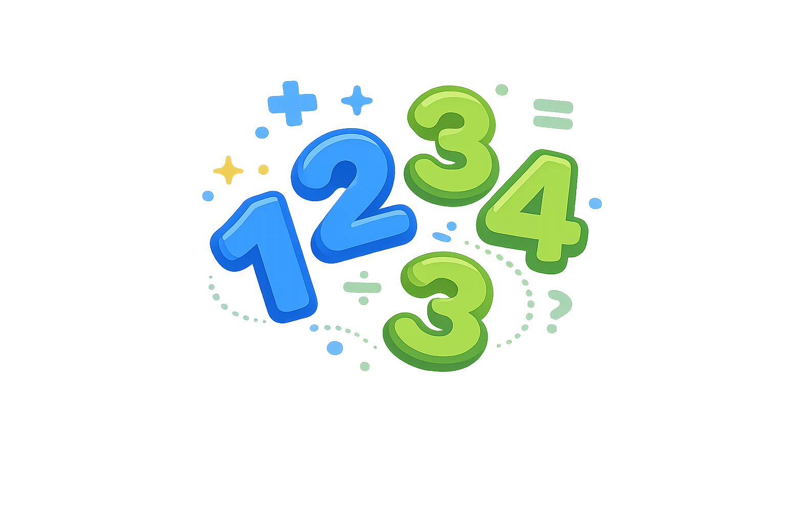

Generador de Números Aleatorios
Genera números aleatorios al instante para participación en clase, juegos matemáticos, turnos de estudiantes y decisiones rápidas del maestro.
Resultado
Listo para generar...
Rango: 1–100
Historial
Aún no se han generado números.
Consejo: usa esta herramienta para elegir estudiantes, turnos, equipos, juegos de repaso, práctica matemática y participación justa.